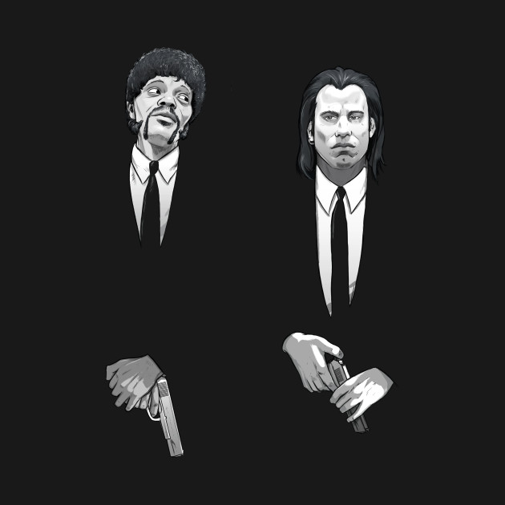

Pulp Fiction
No filme PULP FICTION – TEMPO DE VIOLÊNCIA, de Quentin Tarantino, entre tantos diálogos memoráveis, há a célebre conversa sobre o BIG MAC entre John Travolta (Vincent) e Samuel L. Jackson(Jules):
[Vicent] Tudo bem, quando você … em um cinema em Amsterdã, você pode comprar cerveja. E eu também não quero dizer em um copo de papel. Eles lhe dão um copo de cerveja. E em Paris, você pode comprar cerveja no MacDonald’s. E você sabe o que eles chamam de Quarteirão com queijo em Paris?
[Jules]Eles não chamam de Quarteirão de queijo?
[Vicent]
Não, eles seguem o sistema métrico lá, eles não saberiam o que diabos é um Quarter Pounder.
[JULES]
O que eles chamaram?
[VINCENT]
Eles chamam de Royale com queijo.
[JULES]
Royale com queijo. O que eles chamaram de um Big Mac?
[VINCENT]
Big Mac é um Big Mac, mas eles o chamam de Le Big Mac.
[JULES]
O grande Mac! Ahhaha, o que eles chamam de Whopper?
[VINCENT]
Não sei, não entrei num
Burger King
. Mas você sabe o que eles
colocam em batatas fritas na Holanda em vez de ketchup?[JULES]
O que?
[VINCENT]
Maionese.
[JULES]
Maldita seja!  Cena do Dialogo